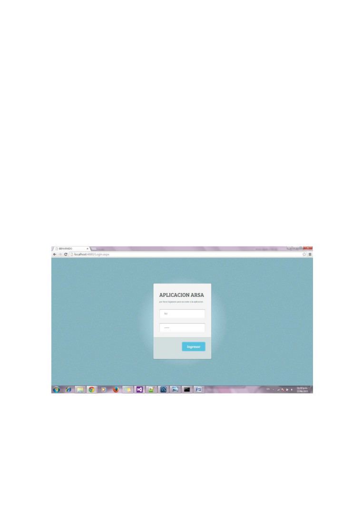
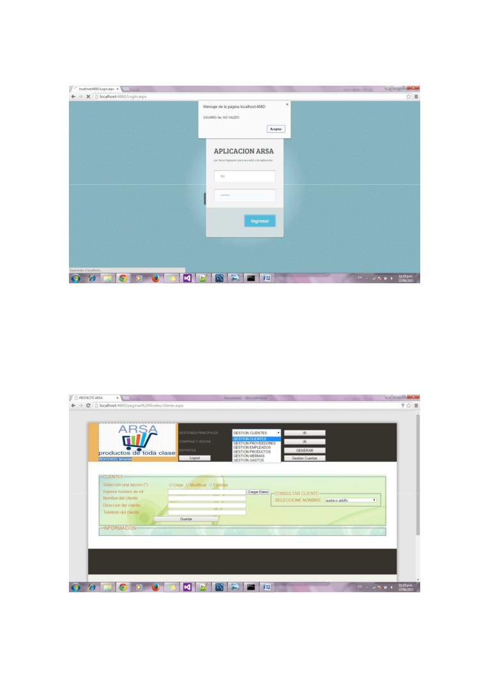
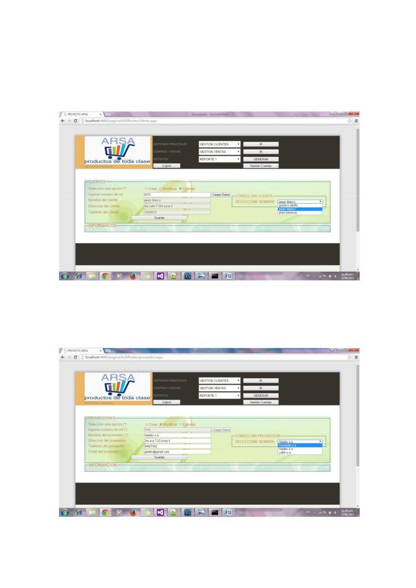
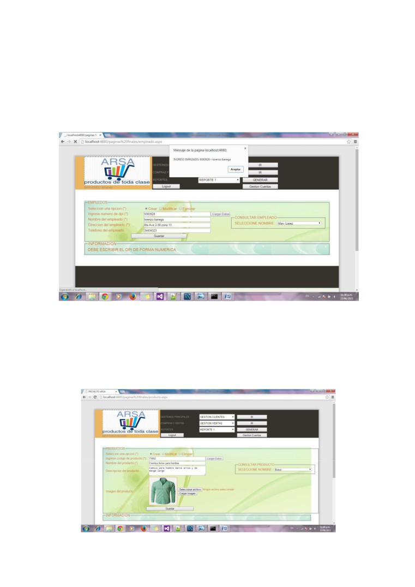
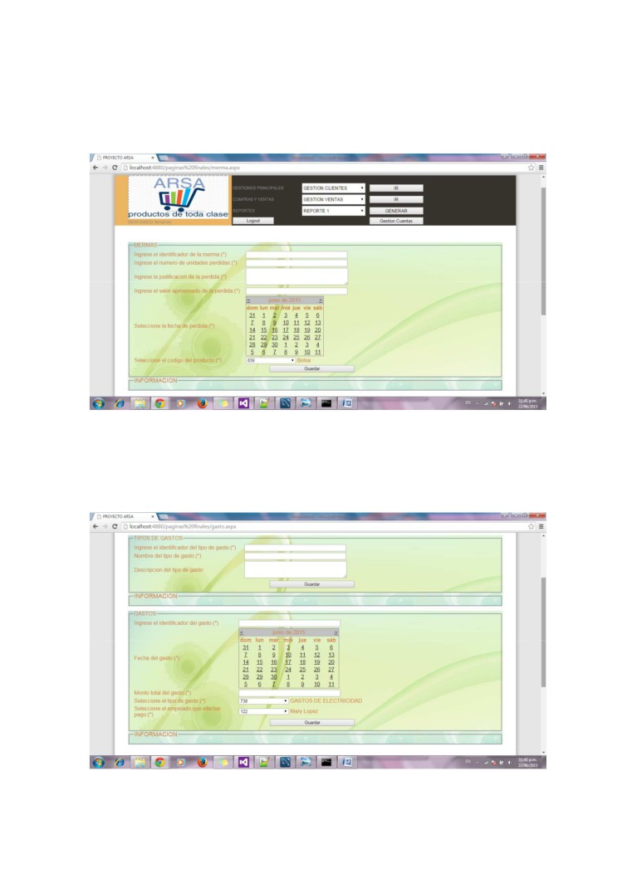
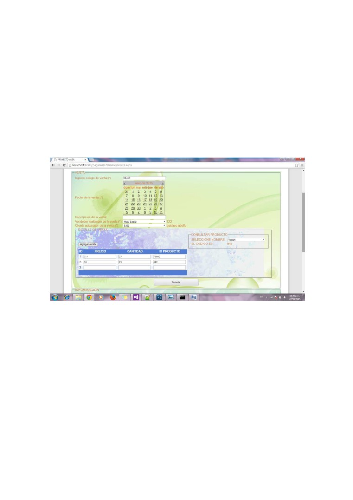
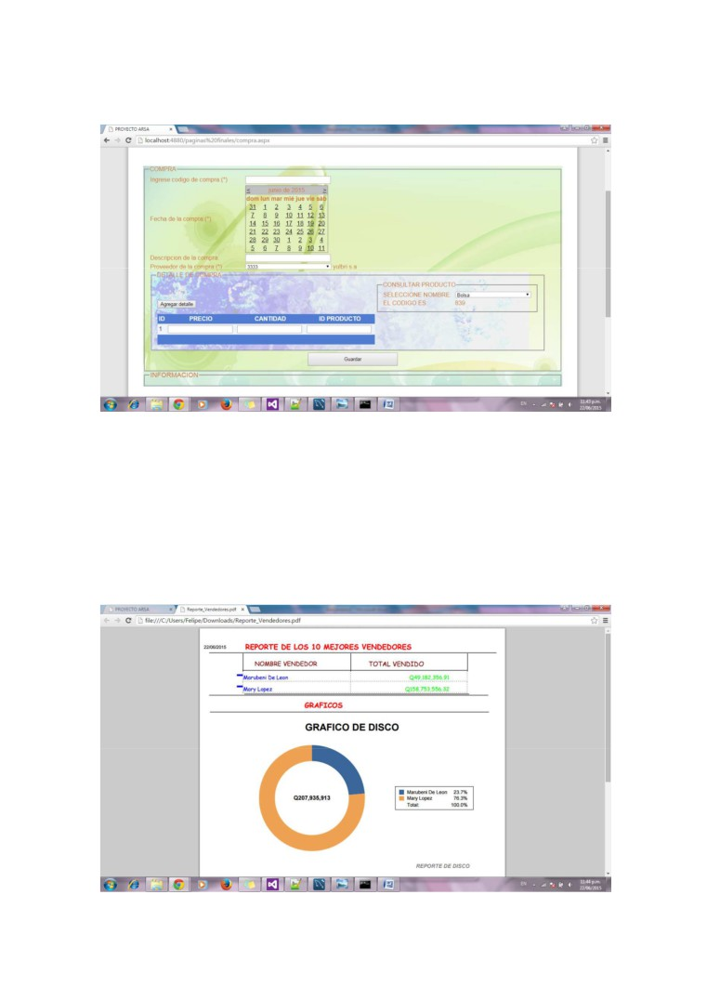
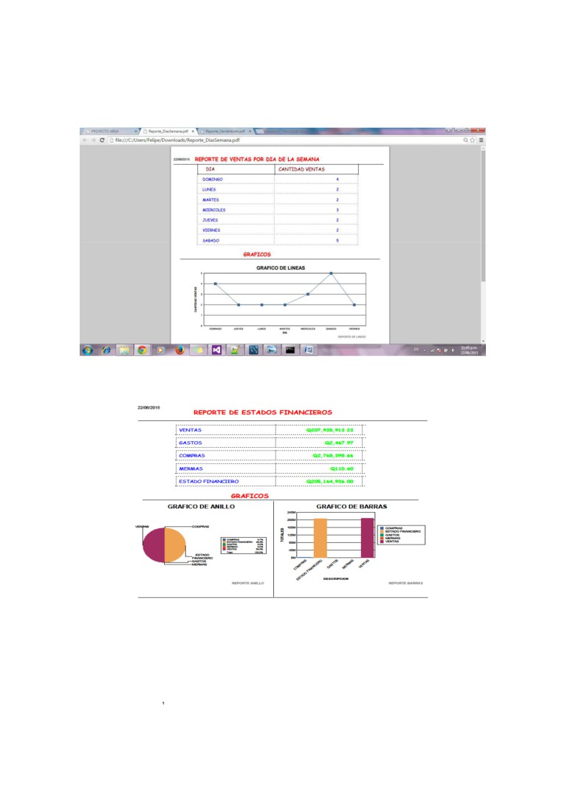

Manual de usuario
Introducción
La aplicación consiste en la esquematización de los movimientos realizados en la empresa
de comercialización de productos ARSA y así proveer una herramienta de soporte a dicha
organización comercial que le facilite y ayude a tomar decisiones que involucren un plus al
negocio, la aplicación es web para tener una mejor accesibilidad por parte de los dueños
de dicho negocio desde cualquier punto donde se pueda conectar a internet.
Explicación
La aplicación comienza con una pantalla sencilla de Login en el cual se puede ingresar si
alguna persona tiene dicha cuenta en el negocio ingresando las credenciales que lo
identifican como tal.
Las credenciales necesarias son: el nickname de la cuenta y el password asociado, para
cualquier inconveniente que se tenga al querer ingresar la aplicación nos dará el detalle de
error del acceso al sistema de administración.

Para el caso que las credenciales validen el acceso a dicho usuario, se podrá acceder a un
menú bastante entendible y accesible, se cuenta con la parte de identificación de los
diferentes tipos de gestión que se pueden realizar entre los cuales están: gestión de los
clientes, gestión de los proveedores, gestión de los empleados, gestión de los productos,
gestión de las mermas, gestión de los gastos, para el acceso a cada una de las gestiones
basta con seleccionar el tipo de gestión y presionar el botón de ir que se encuentra en el
lado derecho.
Para la gestión de los clientes, hay un tipo de consulta de los clientes actuales que facilita la
manipulación de las opciones de creación, modificación y eliminación, para las diferentes opciones

basta con realizar la selección de la misma y los campos se habilitaran en base a la opción
escogida, si algún campo es necesario y no está bien especificado la aplicación indicara las
correcciones necesarias en el área de información localizada en la parte de información
Para la gestión de los proveedores, hay un tipo de consulta de los proveedores actuales que
facilita la manipulación de las opciones de creación, modificación y eliminación, para las diferentes
opciones basta con realizar la selección de la misma y los campos se habilitaran en base a la opción
escogida, si algún campo es necesario y no está bien especificado la aplicación indicara las
correcciones necesarias en el área de información localizada en la parte de información.

Para la gestión de los empleados, hay un tipo de consulta de los empleados actuales que facilita la
manipulación de las opciones de creación, modificación y eliminación, para las diferentes opciones
basta con realizar la selección de la misma y los campos se habilitaran en base a la opción
escogida, si algún campo es necesario y no está bien especificado la aplicación indicara las
correcciones necesarias en el área de información localizada en la parte de información.
Para la gestión de los productos, hay un tipo de consulta de los productos actuales que facilita la
manipulación de las opciones de creación, modificación y eliminación, para las diferentes opciones
basta con realizar la selección de la misma y los campos se habilitaran en base a la opción
escogida, si algún campo es necesario y no está bien especificado la aplicación indicara las
correcciones necesarias en el área de información localizada en la parte de información, se cuenta
con la opción de carga de imágenes de los productos en ingreso para tener la visualización del
mismo.

Para la gestión de las mermas basta con realizar el llenado de los campos que se solicitan y
escoger la fecha de la misma y el producto mermado.
Para la gestión de los tipos de gastos y gastos se encuentran en la misma página, esto para evitar
el desplazamiento entre paginas, el tipo de gasto hará referencia a los diferentes rubros de gastos
que pueden considerarse dentro del negocio, mientras que los gastos son los pagos en sí que son
realizados sobre diferentes servicios que fueron consumidos por parte del negocio o sus
derivados.

Para la realización de las ventas se cuenta con los campos en que identifican las facturas que
respaldan dicha transacción, la fecha de la realización, una descripción opcional y los campos que
indican los entes involucrados en el movimientos, después existe un área de detalle para ingresar
los diferentes productos que entran en juego en la transacción realizada en el cual se podrán ir
agregando en forma opcional mas casillas para seguir agregando mas registros a la venta, los
detalles cuentan con la opción de realizar consultas sobre los productos que se manejan para
tener una más fácil manipulación de los códigos asociados a estos, después de haber ingresado
todos los campos y detalles se realiza la venta simplemente al presionar el botón de guardar, y la
información de detalles nos la indicara en la sección de información para ver el estado de la
transacción realizada.
Para la realización de las compras se cuenta con los campos en que identifican las facturas que
respaldan dicha transacción, la fecha de la realización, una descripción opcional y los campos que
indican los entes involucrados en el movimientos, después existe un área de detalle para ingresar
los diferentes productos que entran en juego en la transacción realizada en el cual se podrán ir
agregando en forma opcional mas casillas para seguir agregando mas registros a la compra, los
detalles cuentan con la opción de realizar consultas sobre los productos que se manejan para
tener una más fácil manipulación de los códigos asociados a estos, después de haber ingresado
todos los campos y detalles se realiza la compra simplemente al presionar el botón de guardar, y la
información de detalles nos la indicara en la sección de información para ver el estado de la
transacción realizada.

Se cuenta también con la opción de crear cuentas simplemente presionando sobre el botón de
gestión de cuentas y los diferentes menús guiaran para realizar el proceso definido entre la
creación de una nueva cuenta o simplemente la eliminación de una cuenta existente.
Se cuenta también con la opción de generar reportes de diferentes aspectos medibles del negocio,
para indicar el estado y tomar decisiones que puedan interesar a los que encargados del negocio
entre los cuales se tienen:
REPORTE DE MEJORES CLIENTES
REPORTE DE MEJORES VENDEDORES

REPORTE CANTIDAD DE VENTAS POR DIA DE LA SEMANA
REPORTE DE ESTADOS FINANCIEROS
NOTAS FINALES:
• Todos los campos que contienen un *(asterisco) seguido de su definición son
campos que son necesarios, mientras que los que no cuentan con dicho carácter
pueden obviarse e ir vacios.
• La realización de la publicación de dicha aplicación en un sitio web en internet se
hará cuando se llegue a un acuerdo entre las partes involucradas, realizando el
cobro del procedimiento de dicho servicio ofrecido.
E-mail de Soporte Técnico:
Para dudas o comentarios sobre el software, puede contactar al programador en el
siguiente correo:
• felipeantonio.0804@gmail.com
VIDEO EXPLICATIVO: